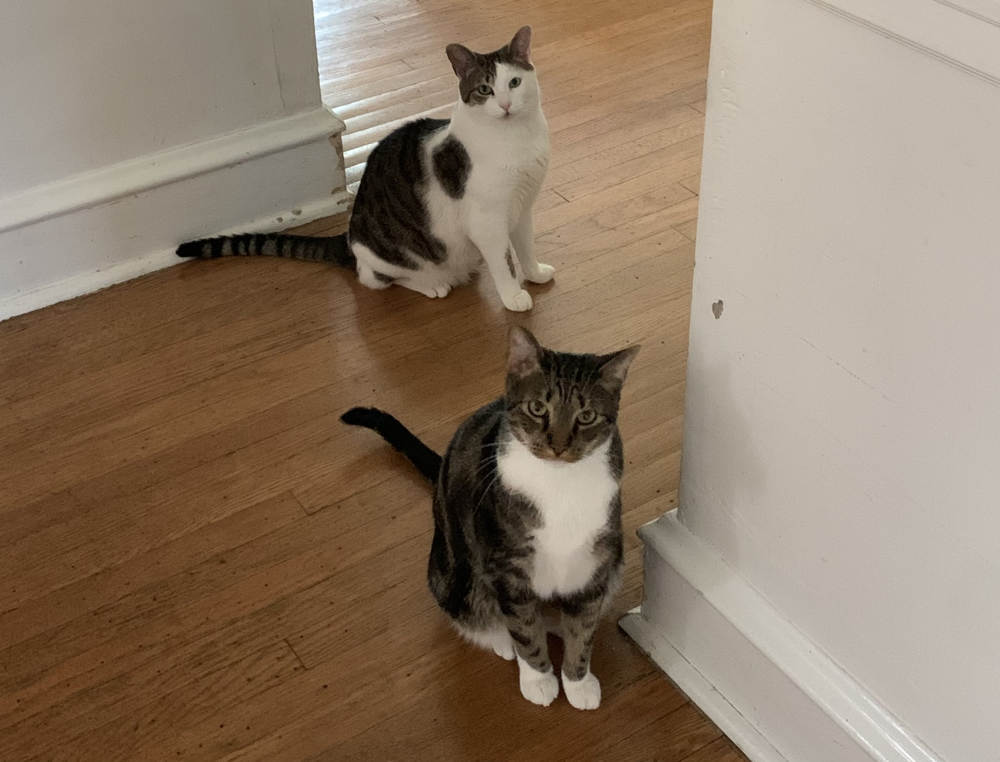

About Me
Professional
I am a second-year undergraduate student at Drexel University, driven by a passion for creativity, the intricacies of the mind, and the complexity of human behavior through the lens of technology. I am a User Experience & Interaction Design (UXID) major with a minor in Psychology.
My introduction to Drexel's UXID program occurred during my initial co-op at Comcast Corporation, back when I was pursuing a major in Psychology. While working at the Comcast Technology Center, I encountered The Universal Sphere exhibition -- an engaging and interactive cinematic experience open to the public. I later learned that UXID co-op students contributed to this innovative exhibit, so I was intrigued and sought further information. After thorough discussion with faculty at the Antoinette Westphal College of Media Arts and Design, I decided to take a gap semester before officially transitioning into my new major.
Drexel University mandates participation in the Co-Op program, a 6-month cooperative education initiative offering students invaluable professional work experience in diverse settings. This includes international, research, and entrepreneurial job opportunities. I will be available for the next co-op cycle from April 2025 to September 2025. I am eager to continue my journey of growth and exploration in the field of digital media.
Personal
I share a home with two affectionate feline companions, Boots and Cal, both of whom are three years old. We welcomed these two loving brothers into our family after adopting them from a farm owned by my older sister's friend. Throughout their transition from stray barn kittens to cuddly domestic cats, their silly personalities never fail to bring us joy and amusement.
I also love reading a good book while wrapped in a comfy blanket -- although it puts me to sleep within five minutes. I could read the Hunger Games series over and over again (I've probably read it 5 times). Besides my digital art, I found my passion for creativity from painting since I was 5! Send me an email if you want to dive deeper into some fun books and art!
